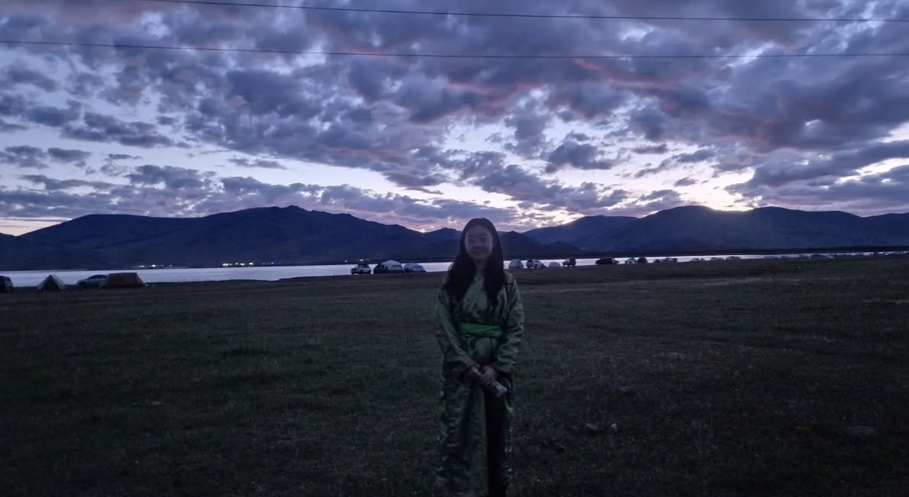
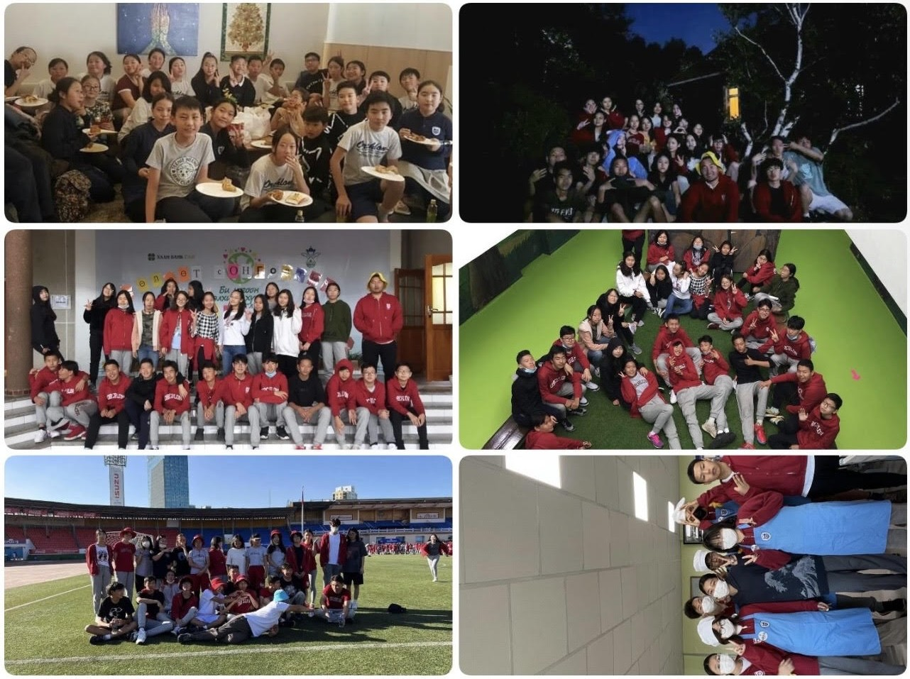
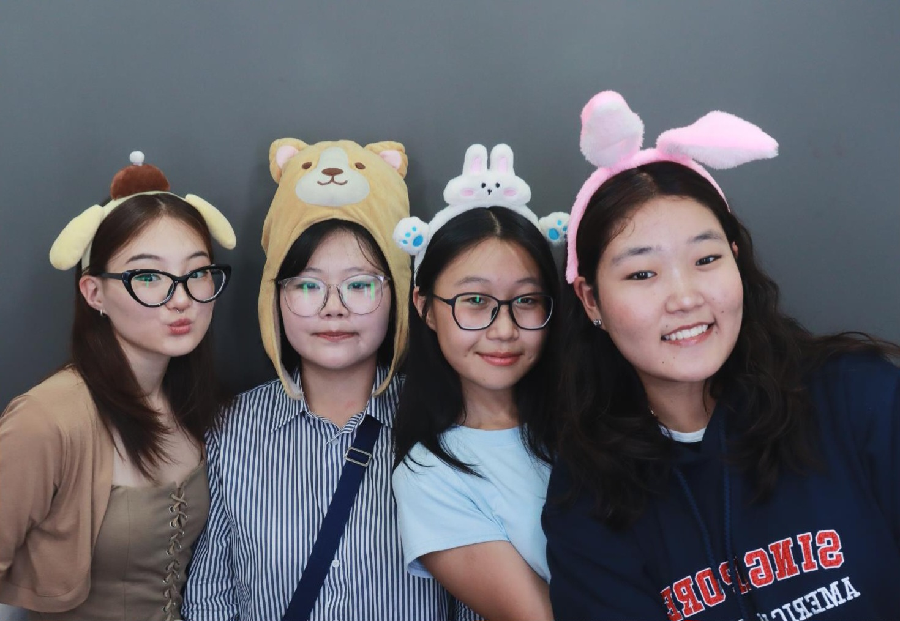
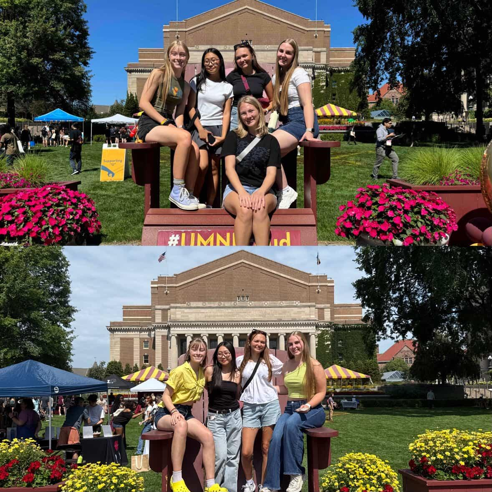
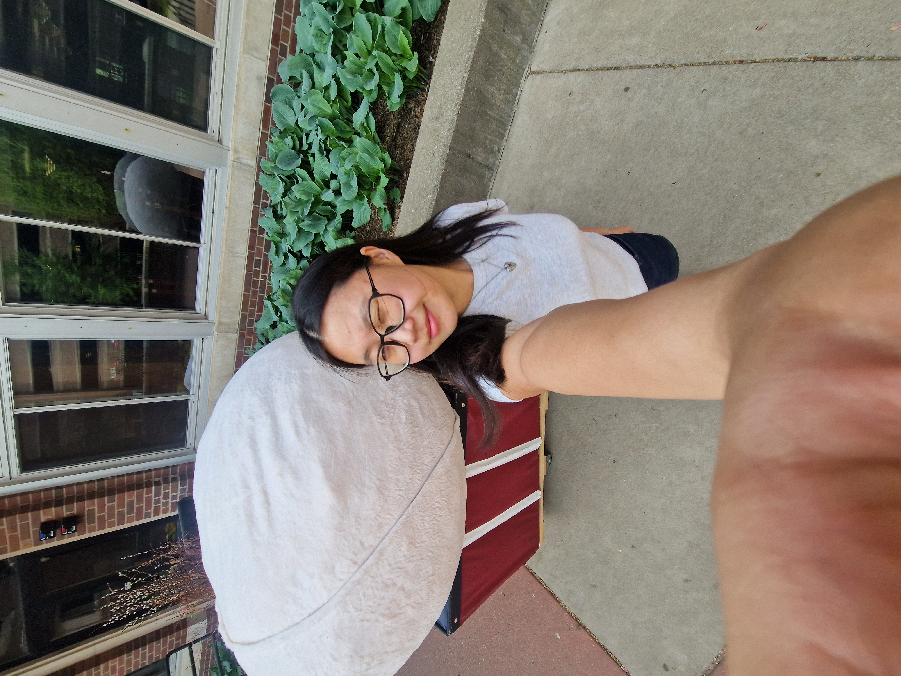
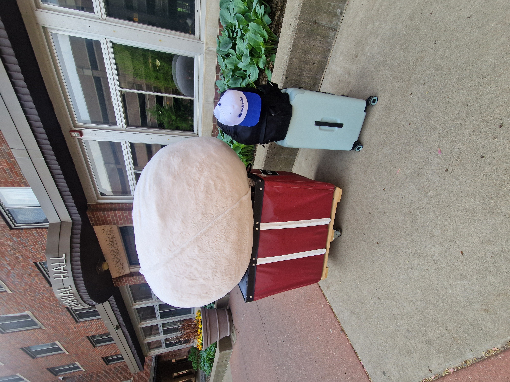
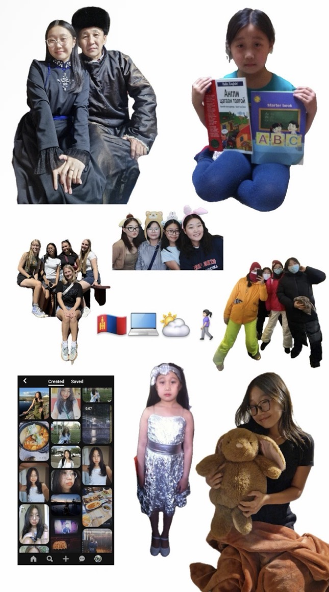

I believe I'm a deeply flexible person who can adapt to almost any environment. If you had asked me back home what animal best describes me, I would have said a sheep. I was comfortable in the familiar, moving with the crowd I knew. But living abroad changed that. I now see myself as an octopus. Just like an octopus can squeeze through the smallest gaps and blend into any surrounding, I have learned to navigate new communities, cultures, and spaces with ease. No matter where I go, I find a way to belong.
Click tentacle to find out more!
Culture
Here is a picture of me in traditional Mongolian clothing called 'Deel', posing in front of one of Mongolia's greatest natural attractions, watching the sunrise with my dad at 6AM.

Education
Since I attended an international school with a dual program my whole life, I learned to speak English fluently and take classes in both English and Mongolian. I was fortunate to have access to a higher level of education that exposed me to different languages, cultures, and skills that many others did not have the opportunity to experience.

Family
Both of my parents are Mongolian, born in rural areas before moving to the capital city during their adolescence. I have an older brother and a younger sister, with a significant age gap between us. Although neither of my parents speaks English, my siblings are fluent, which means I can converse with them in both English and Mongolian. When I share stories about my life in the U.S. with my parents, there are often moments where the language barrier makes it difficult to fully communicate. In those times, being able to turn to my siblings and express myself freely in English is something I truly value.
Community
Wherever I go, I feel very lucky to attract good people and build meaningful friendships. Growing up, I was able to make many friends, some very different from me and some very similar. I am grateful to still be close with my childhood friends after all these years. Right now, all of my childhood friends are also studying abroad in different countries around the world. Thanks to them, I am able to learn more about the places they live, the cultures they experience, and the people they meet.
Coming to college, I was once again lucky to meet so many good people, including my current roommates who I share an apartment with. We have been close friends since meeting during welcome week. They have helped me so much in adapting to and experiencing life abroad in the U.S. Especially since my family cannot be here to help me navigate the challenges I face, they have stepped in with genuine care and understanding. Coming to the U.S., I have made so many friends from different races, cultures, backgrounds, and walks of life, something I never had the opportunity to experience back in Mongolia. I believe that has greatly helped me expand my horizons and understand the world from a much broader point of view.


Challenges
As a first generation student whose parents speak no English, I have had to take care of everything by myself, which is very hard. Back home, I never needed to do any of the things I do now. I was a happy little sheep who grew up in a loving household. However, moving to the U.S. with no prior experience of even travelling abroad, I was at first very brave and excited for whatever was to come, because I had no expectations. After living and attending college in the U.S. for some time, I started enjoying it even more and do not regret anything. But at times I look back and feel like I would never be able to do it again today.
I believe I have the ability to adapt and overcome most of the obstacles I face, no matter what. However, one of the times I felt the lowest emotionally was not being able to find a part time job and receiving rejections left and right. One of the most physically draining experiences was moving out of my academic year dorm to a summer dorm, where I had to load all of my belongings onto a cart and pull everything across campus with my suitcase and a huge bean bag on a very hot and windy day all by myself. But after it was all done, I felt very happy and proud of myself.


Identity
I was born in Mongolia to an ethnically Mongolian couple. Since I primarily grew up in Ulaanbaatar, the capital city, I did not have the full nomadic cultural experience that Mongolia is known for. Here I have included a photo collage of my childhood, culture, family, friends, and hobbies.
The meaning of my name Tumenkhuslen can be translated as 'countless wishes.' The story behind my name varies, but one version my parents often share is that when I was born, many of their wishes came true, and they hoped I would also achieve all of my dreams. I hope to live up to my name and achieve all of my dreams and help others around me achieve their goals in life.

Dream
I came here as a sheep with no expectations and became an octopus. So where is the octopus going next? What will the octopus turn into next?